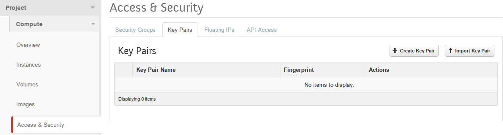
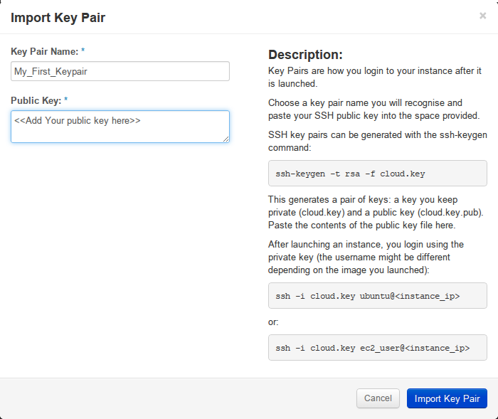
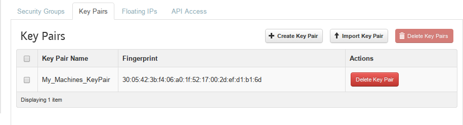

INTRO
Key-based authentication is the most secure way to gain access to your Kili instance (provided you keep your private key under lock and key).
The others are password based and kerberos based SSH authentication which are disabled by default on the production images we provide for you.
This article will illustrate how to generate SSH Keys and import the resultant public key into your kili account when launching an instance and thereafter, allowing you to gain access to your new VM.
Pre-requisites:-
- Active login session
Instructions
-
If you do not have a keypair, generate one on:-
- Posix (Mac/Linux) by :-
- Running ssh-keygen -t rsa
- Enter key location (leave blank for bracketed default)
- Enter a passphrase and confirm
- Windows using PuTTY by:-
- Running puttygen.exe
- Click generate and fill the progress bar by moving the cursor over the blank area to generate random characters.
- Enter a passphrase in the Key passphrase field and confirm the same in the respective field.
- Save the public and private keys in a safe location.
- Posix (Mac/Linux) by :-
-
On the dashboard, open the launch Instance modal from either:-
- The access and security panel (
Project→Compute→Access & Security) by clicking "Import keypair" button at the top right of the panel. - The Access & Security tab in the launch instance modal form.
- Click on Import Keypair button.
 - Keypair Details will be displayed as shown in the image below.

- Click on Import Keypair button.
- The access and security panel (
- Once your have your Import Keypair modal, provide a name you will recognise for the key and paste the contents of your public key file into the public key text field.